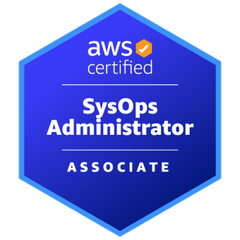
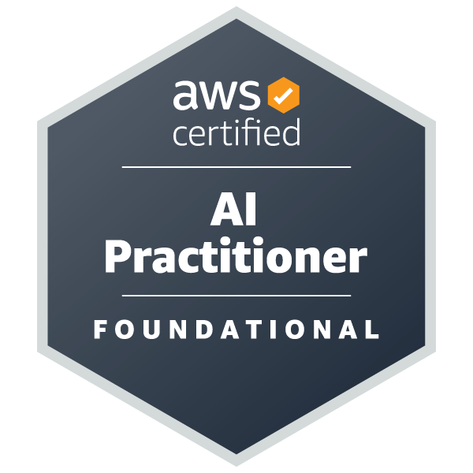
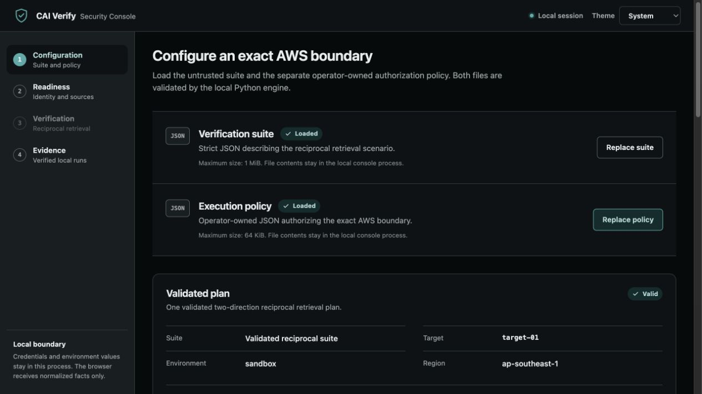
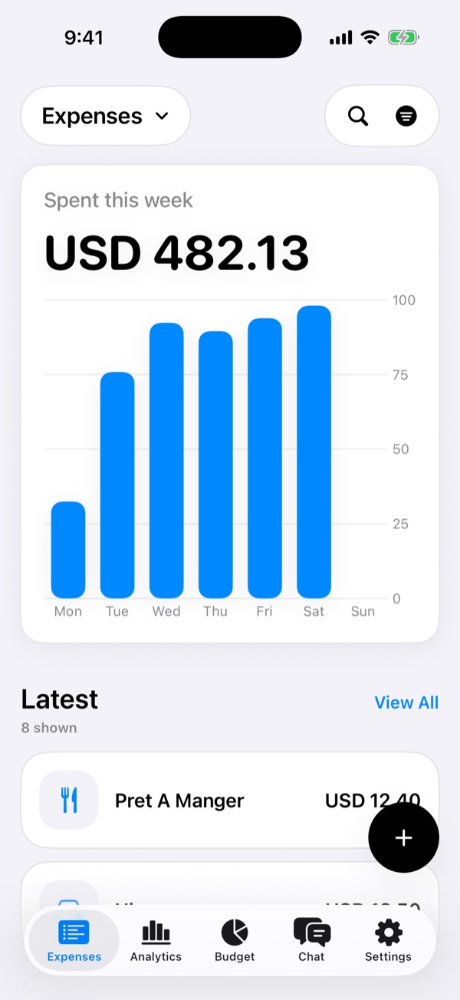
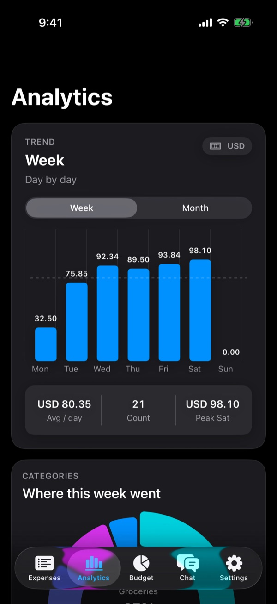
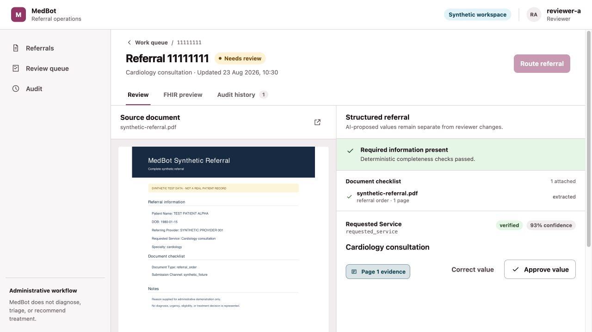
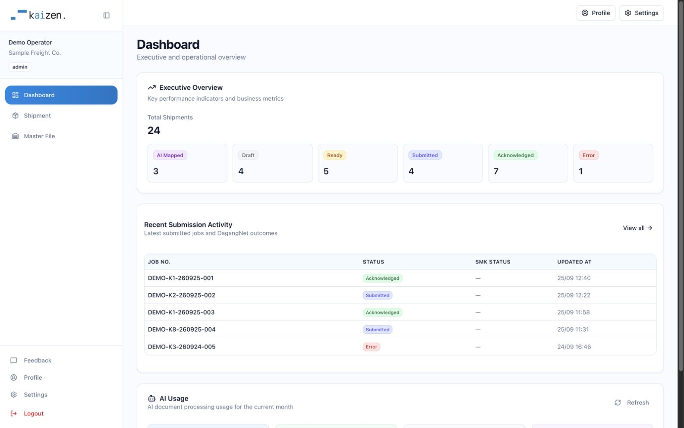
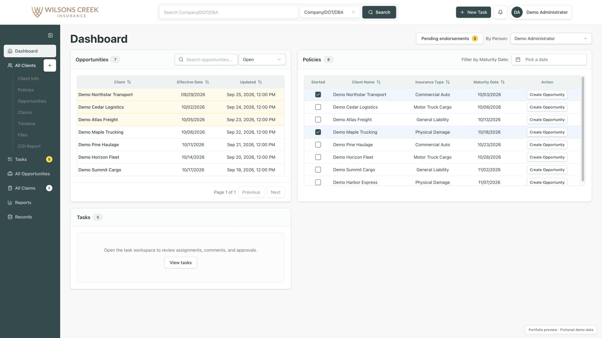
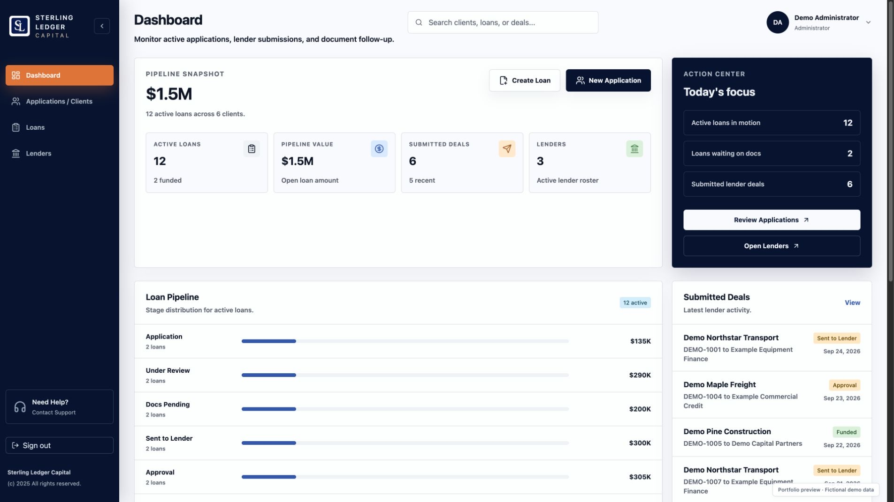

AWS Certified
Cloud engineer Software builder
Nazar Hasanov
I make complex systems easier to trust.
I'm working across backend platforms, DevOps, reliability, architecture, and applied machine learning. Currently a Cloud Engineer at BT Group.
Current
Cloud Engineer
BT Group
Backend●Cloud●DevOps●SRE●Architecture●Full Stack●Applied ML●
A systems view
Years across code, cloud, and delivery.
I work where software meets infrastructure: backend services, cloud platforms, delivery systems, and the decisions that keep them maintainable.
I currently work as a Cloud Engineer at BT Group. Before that, I contributed across startups and established teams in Malaysia, Singapore, the UAE, Hong Kong, Kazakhstan and the US. An MBA complements my software engineering background with a commercial view of delivery.
- 6+
- years in software and cloud engineering
- 15+
- technical certifications earned
The systems I work across.
Broad enough to see the whole delivery path, focused enough to work deep in the details.
Backend systems Python, Go, Node.js, SQL, Docker
Building and supporting the service layer, from application logic and data access to containerised delivery.
- Python
- Golang
- Node.js
- SQL
- Docker
Cloud & reliability Cloud services, IaC, CI/CD, containers
Working across cloud platforms and delivery practices with reliability, repeatability, and operability in view.
- AWS
- Azure
- Oracle Cloud
- Infrastructure as code
- CI/CD
- Containerisation
Product engineering JavaScript, TypeScript, React, Next.js
Taking web products from interface through integration, with enough range to collaborate across the full stack.
- JavaScript
- TypeScript
- React
- Next.js
Applied machine learning TensorFlow, PyTorch, Keras, MLOps, Ultralytics
Exploring production-minded machine learning through freelance work and focused side projects.
- TensorFlow
- PyTorch
- Keras
- MLOps
- Ultralytics
Verified knowledge
Credentials across the major cloud platforms.
View credential

AWS Certified
SysOps Administrator
Associate
AWS Certified
AI Practitioner
Foundational
Oracle Cloud Infrastructure
Foundations Associate
Cloud
Microsoft Certified
Azure Fundamentals
FoundationalExperience that crosses disciplines and borders.
Roles are shown by most recent end date. Several projects overlapped as contract and freelance engagements.
Oct 2025 to present
Cloud Engineer
Current role
Aug 2020 to Oct 2025
Cloud Engineer Web Developer
Malaysia
Apr 2025 to Sep 2025
Founding Engineer
Hong Kong
Aug 2024 to Dec 2024
Full-Stack Developer Growth Lead
United States
Jul 2024 to Aug 2024
Backend DevOps
Malaysia
Aug 2023 to May 2024
Backend Developer
United Arab Emirates
Jan 2024 to Mar 2024
Full-Stack Developer
Kazakhstan
Aug 2022 to Dec 2022
Full-Stack Developer
Tavern DAO
Singapore
Postgraduate
Master of Business Administration, Digital Leadership
De Montfort University
Business
Undergraduate
BSc (Hons) Computer Software Engineering
Staffordshire University
Engineering
Foundation
Foundation Programme
Asia Pacific University
Computing
Selected work.
Some projects I’ve worked on, from cloud security and document workflows to the products people use every day.

CAI Verify
Testing the boundaries of AI retrieval on AWS. A local security console that checks access between identities and packages the evidence for review.
- Python
- FastAPI
- React
- AWS
Explore CAI Verify
From boundary to evidence
- Validate AWS identity and source readiness before running two-direction retrieval checks.
- Correlate runtime evidence with pass, fail, or inconclusive results.
- Verify evidence bundles with SHA-256 hashes and inspect local run history.
An engineering alpha focused on retrieval-boundary verification, with manual AWS release validation still pending.
SyncFlo / Product screensiOS


SyncFlo
A native iOS expense tracker built in Swift. Capture Apple Pay purchases through Shortcuts, keep a local spending ledger, and explore budgets and insights.
- Swift
- SwiftUI
- SwiftData
- App Intents
Explore SyncFlo
From purchase to spending insight
- Capture merchant, amount, currency, and date through a user-configured Wallet automation and App Intents.
- Store expenses locally with SwiftData, check for duplicates, and review missing fields. Optional AI categorisation uses the user’s own provider key.
- Explore spending trends and category breakdowns with Swift Charts, alongside budget allocations and local alerts.
Built for iPhone and iPad. The companion React website supplies these app captures, which use fictional purchases and budgets.

Healthcare workflows
MedBot
Evidence-first referral operations
A referral workspace connecting administrative PDFs, source-linked field review, and FHIR records. Human approval stays part of the workflow, with an audit trail behind each step.
- Next.js
- FastAPI
- PostgreSQL
- FHIR R4
Explore MedBot
Traceable document review
- Upload referral PDFs and review extracted fields against their source evidence.
- Approve or correct fields, check completeness, and route referrals for follow-up.
- Preview and write FHIR resources, with Keycloak authentication and a verifiable audit history.
A synthetic-data reference implementation using deterministic extraction fixtures.

A customs and brokerage workspace that turns shipping documents into structured declaration workflows, with AI-assisted extraction, duty calculations, and DagangNet submission tracking.
- React
- Flask
- PostgreSQL
- AWS
Explore Kaizen Flow
Connecting documents and customs workflows
- Process PDF and Excel uploads with AI extraction and HS-code retrieval support.
- Calculate customs valuation, duties, and SST as part of declaration preparation.
- Track DagangNet submissions, responses, and mailbox history alongside job status.
A React and Flask application with an AWS Lambda API, S3 storage, and an ECS/SQS document-processing worker.

An insurance operations platform bringing clients, quotes, policies, endorsements, claims, and certificates into one workspace. Built for day-to-day agency workflows and reporting.
- React
- Django REST
- PostgreSQL
- Terraform
Explore insurance management
Supporting the policy lifecycle
- Manage quotes, policies, endorsements, and claims with their supporting documents.
- Preview insurance certificates and deliver them by email.
- Track tasks and activity, with agency and employee reporting.
A production application backed by Django REST Framework, with AWS ECS, RDS, S3, and CloudFront infrastructure managed through Terraform.

An administration workspace for managing clients, loan applications, and lenders. Track submissions, collect documents through expiring upload links, and keep notes alongside each deal.
- React
- Django REST
- AWS
- OpenTofu
Explore loan management
Keeping each application connected
- Manage multiple loans per client and track a loan’s submissions to multiple lenders.
- Collect external documents with expiring, revocable upload links.
- Keep notes and activity history with each record, and gate document downloads on malware-scan status.
A React and Django REST application with PostgreSQL, AWS storage and GuardDuty integration, and infrastructure defined in OpenTofu.
Have a role or project in mind?
Tell me what your team is building.
I’m always interested in thoughtful engineering conversations across cloud, backend systems, DevOps, architecture, and applied ML.